5. Cryptographic Criteria¶
This chapter defines some properties relevant for cryptographic applications and explains how to use the package to compute them. Those properties are criteria or those which provide useful information in cryptanalysis. Among the criteria we find nonlinearity, r-th order nonlinearity, linearity distance, balancedness, correlation immunity, resiliency (i.e. balancedness and correlation immunity), propagation criterion, global avalanche criterion, algebraic degree and algebraic immunity. Other properties described are linear potential, differential potential, linear or differential relations associated with a specific value, linear structures, the maximum possible nonlinearity or the maximum possible linearity distance achievable by a Vector Boolean Function with the same number of inputs, the type of function in terms of nonlinearity, the Frequency distribution of the absolute values of the Walsh Spectrum or the Autocorrelation Spectrum, its cycle structure, the presence of fixed points or negated fixed points.
The figure summarizes the relationships among several representations and the criteria studied in this chapter.

The representations which are Boolean matrices are coloured in red, those which are integer matrices are coloured in blue, and those which are criteria are coloured in green.
5.1. Algebraic degree¶
5.1.1. Description¶
Cryptographic algorithms using Boolean functions to achieve confusion in a cipher (S-boxes in block ciphers, combining of filtering functions in stream ciphers) can be attacked if the functions have low algebraic degree. The algebraic degree is a good indicator of the function’s algebraic complexity. The higher the degree of a function, the greater is its algebraic complexity. Higher order differential attack [Lai:94] exploits the fact that the algebraic degree of the S-box is low.
The algebraic degree of a Vector Boolean function  is defined as the minimum among the algebraic degrees of all component functions of F [Nyberg:92], namely:
is defined as the minimum among the algebraic degrees of all component functions of F [Nyberg:92], namely:
where the algebraic order or degree of a Boolean function is the order of the largest product term in the ANF. This criterion is obtained by generating the ANF table and then analyzing the degree of all the component functions.
Functions with algebraic degree less than or equal to 1 are called affine. A non-constant affine function for which 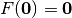 is called linear. We refer to functions of degree two as quadratic and functions of degree three as cubic.
5.1.2. Library¶
The method used to obtain this criterion is the following:
void deg(int& d, VBF& F)
5.1.2.1. Example¶
The following program provides the algebraic degree of a Vector Boolean function given its Truth Table.
#include <iostream>
#include <fstream>
#include "VBF.h"
int main(int argc, char *argv[])
{
using namespace VBFNS;
VBF F;
NTL::mat_GF2 T;
ifstream input(argv[1]);
if(!input) {
cerr << "Error opening " << argv[1] << endl;
return 0;
}
input >> T;
F.puttt(T);
input.close();
cout << "The algebraic degree of the function is "
<< deg(F) << endl;
return 0;
}
If we use the NibbleSub S-box Truth Table as input we will find out that its algebraic degree is 2.
The following figure represents the ANF table of NibbleSub nonzero component functions and emphasizes in red the ANF terms of degree 4. As we can see there are no terms of degree 4 in neither of the component functions of NibbleSub.

The following figure represents the ANF table of NibbleSub nonzero component functions and emphasizes in blue the ANF terms of degree 3. As we can see there are no terms of degree 3 in one of the component functions of NibbleSub, which is marked in yellow.

The following figure represents the ANF table of NibbleSub nonzero component functions and emphasizes in orange the ANF terms of degree 2. As we can see there are always terms of degree 2 in all the component functions of NibbleSub. Because of this, the algebraic degree of NibbleSub is 2.

5.2. Nonlinearity¶
5.2.1. Description¶
In order to provide confusion, cryptographic functions must lie at large Hamming distance to all affine functions. Because of Parseval’s Relation, any Vector Boolean function has correlation with some affine functions of its input. This correlation should be small: the existence of affine approximations of the Boolean functions involved in a cipher allows to build attacks on this system (see, [Matsui:93] for block ciphers and [DingXS:91] for stream ciphers).
The nonlinearity of a Boolean function  is defined as the Hamming distance between f and the subspace of affine functions [PieprzykF:88]:
is defined as the Hamming distance between f and the subspace of affine functions [PieprzykF:88]:  .
.
The nonlinearity of a Vector Boolean function is defined as the minimum among the nonlinearities of all component functions of F [Nyberg:92]:

The nonlinearity of F can be expressed in terms of the Walsh coefficients by the following theorem:
Let , the nonlinearity of F can be calculated in terms of the maximum of the absolute values of its Walsh Spectrum without taking into account the element of its first row and column, as follows:

Let  , the nonlinearity of f can be expressed in terms of its Walsh transform as follows:
, the nonlinearity of f can be expressed in terms of its Walsh transform as follows:

The spectral radius of a Boolean function  .
.
This criterion is a measure of the distance of a Vector Boolean function and all Affine Vector Boolean functions. If this distance is small, it is possible to mount affine approximations of the Vector Boolean functions involved in a cipher to build attacks (called linear attacks) on a block cipher [Matsui:94]. In the case of stream ciphers, these attacks are called fast correlation attacks. Thus, this property is useful to assess the resistance of a Vector Boolean function to linear attacks (including correlation attacks), i.e., attacks where the function F is approximated by an affine function.
5.2.2. Library¶
The method used to obtain the nonlinearity of a Vector Boolean function is the following:
void nl(NTL::RR& x, VBF& F)
The method used to obtain the spectral radius of a Vector Boolean function is the following:
void SpectralRadius(NTL::ZZ& x, VBF& F)
The method used to the maximum nonlinearity that can be achieved by a Vector Boolean function with the same number of input bits and output bits is the following:
NTL::RR nlmax(VBF& F)
The method used to obtain the type of function in terms of nonlinearity is the following:
void typenl(int& typenl, VBF& F)
5.2.2.1. Example 1¶
The following program provides the nonlinearity of a Vector Boolean function given its Truth Table together with the maximum nonlinearity that can be achieved by a Vector Boolean function with the same number of input bits and output bits.
#include <iostream>
#include <fstream>
#include "VBF.h"
int main(int argc, char *argv[])
{
using namespace VBFNS;
VBF F;
NTL::mat_GF2 T;
ifstream input(argv[1]);
if(!input) {
cerr << "Error opening " << argv[1] << endl;
return 0;
}
input >> T;
F.puttt(T);
input.close();
cout << "The spectral radius of the function is " << SpectralRadius(F)
<< endl;
cout << "The nonlinearity of the function is " << nl(F) << endl;
cout << "The maximum nonlinearity that can be achieved by
a Vector Boolean function with the same dimensions is "
<< nlmax(F) << endl;
return 0;
}
If we use the NibbleSub S-box Truth Table as input, the output would be the following:
The spectral radius of the function is 12
The nonlinearity of the function is 2
The maximum nonlinearity that can be achieved by
a Vector Boolean function with the same dimensions is 5
The following figure represents the Walsh Spectrum of NibbleSub and emphasizes in blue its maximum absolute values.

From definition we have 
5.2.2.2. Example 2¶
The following program provides the nonlinearity of a Vector Boolean function given its polynomial representation in ANF together with the maximum nonlinearity that can be achieved by a Vector Boolean function with the same number of input bits and output bits, and the type of function in terms of nonlinearity.
#include <iostream>
#include <fstream>
#include "VBF.h"
int main(int argc, char *argv[])
{
using namespace VBFNS;
VBF F;
vec_pol p;
ifstream input(argv[1]);
if(!input) {
cerr << "Error opening " << argv[1] << endl;
return 0;
}
input >> p;
F.putpol(p);
input.close();
cout << "The nonlinearity of the function is " << nl(F) << endl;
cout << "The maximum nonlinearity that can be achieved by
a Vector Boolean function with the same dimensions is "
<< nlmax(F) << endl;
int type;
typenl(type, F);
if (type == BENT) {
cout << "It is a bent function" << endl;
} else if (type == ALMOST_BENT) {
cout << "It is an almost bent function" << endl;
} else if (type == LINEAR) {
cout << "It is a linear function" << endl;
}
return 0;
}
If we use the  as input, the output would be the following:
as input, the output would be the following:
The nonlinearity of the function is 6
The maximum nonlinearity that can be achieved by
a Vector Boolean function with the same dimensions is 6
It is a bent function
As the nonlinearity of this Boolean function is maximal, it is a bent function.
5.3. r-th order nonlinearity¶
5.3.1. Description¶
As well as the affine functions, we can consider that functions with low algebraic degree are weak functions from the cryptographic point of view. A criterion can be defined en terms of the Hamming distance to the Reed-Muller code of order 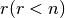.
For every positive integer r, the r-th order nonlinearity of a Vector Boolean function F is the minimum r-th order nonlinearity of its component functions. The r-th order nonlinearity of a Boolean function equals its minimum Hamming distance to functions of algebraic degrees at most r (see [carlet2008higher] for details).
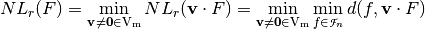
Computing r-th order nonlinearity is not an easy task for 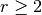. Unlike the first-order nonlinearity there are no efficient algorithms to compute second-order nonlinearities for  . VBF library naive exhaustive search is employed for this purpose.
. VBF library naive exhaustive search is employed for this purpose.
5.3.2. Library¶
The method used to obtain this criterion is the following:
void nlr(long& x, VBF& F, int r)
This method return -1 if the number of functions to check is too large (greater than the maximum value of a long int variable).
5.3.2.1. Example¶
The following program provides the 2-nd order nonlinearity of a Vector Boolean function given its Truth Table.
#include <iostream>
#include <fstream>
#include "VBF.h"
int main(int argc, char *argv[])
{
using namespace VBFNS;
VBF F;
NTL::mat_GF2 T;
long a;
ifstream input(argv[1]);
if(!input) {
cerr << "Error opening " << argv[1] << endl;
return 0;
}
input >> T;
F.puttt(T);
input.close();
nlr(a,F,2);
cout << "The 2-nd order nonlinearity of the function is "
<< a << endl;
return 0;
}
If we use the NibbleSub S-box Truth Table as input, the output would be the following:
The 2-nd order nonlinearity of the function is 0
This result is congruent to the fact that its algebraic degree is 2.
5.4. Balancedness¶
5.4.1. Description¶
The output of a Vector Boolean function used in a cipher must be uniformly distributed over for avoiding statistical dependence between the plaintext and the ciphertext (which can be used in attacks).
is balanced (or has balanced output) if each possible output m-tuple occurs with equal probability  . This criterion can be evaluated from the Walsh Spectrum in the following way: 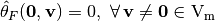.
. This criterion can be evaluated from the Walsh Spectrum in the following way: 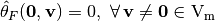.
is balanced if and only if the Walsh coefficient at  is zero. is balanced if and only if the first row of its Walsh Spectrum has all its elements equal to zero except from the first entry.
is zero. is balanced if and only if the first row of its Walsh Spectrum has all its elements equal to zero except from the first entry.
The imbalance of a Boolean function is defined to be 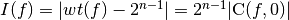 where 0 indicates the constant zero Boolean function.
Imbalance is defined as the minimum Hamming distance to a balanced function and is therefore directly proportional to the magnitude of the correlation with the constant zero Boolean function. Thus, when imbalance is zero, the function is balanced. Balancedness is a fundamental cryptographic criterion as an imbalanced function has suboptimal unconditional entropy, i.e. it is correlated to a constant function.
The significance of the balancedness criterion is that the higher the magnitude of a function’s imbalance (deviation from uniform distribution of outputs), the more likelihood of a high probability linear approximation being obtained. This, in turn, represents a weakness in the function in terms of linear cryptanalysis. In particular, a large imbalance may enable the function to be easily approximated by a constant function.
5.4.2. Library¶
This criterion can only take values 0 (meaning F is not balanced) or 1 (meaning F is balanced). The method used to obtain this criterion is the following:
void Bal(int& bal, VBF& F)
and there is also an inline function:
inline int Bal(VBF& a)
5.4.2.1. Example¶
The following program finds out if a Vector Boolean function is balanced given its Truth Table.
#include <iostream>
#include <fstream>
#include "VBF.h"
int main(int argc, char *argv[])
{
using namespace VBFNS;
VBF F;
NTL::mat_GF2 T;
ifstream input(argv[1]);
if(!input) {
cerr << "Error opening " << argv[1] << endl;
return 0;
}
input >> T;
F.puttt(T);
input.close();
if (Bal(F)) {
cout << "It is a balanced function" << endl;
} else {
cout << "It is not a balanced function" << endl;
}
return 0;
}
If we use the NibbleSub S-box Truth Table as input, the output would be the following:
It is a balanced function
NibbleSub S-box is balanced as each possible 4-tuple occurs with equal probability 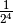.
The following figure represents the Walsh Spectrum of NibbleSub and emphasizes in red the first row.

As all Walsh Spectrum’s values are 0 except from the , we can conclude that NibbleSub is balanced.
5.5. Correlation Immunity¶
5.5.1. Description¶
In stream cipher applications, it is vital that the Boolean function used as the combining function have certain properties. In addition to being balanced, possessing high nonlinearity and high algebraic degree, the function should have correlation immunity greater than zero to resist a divide and conquer attack [Siegenthaler:84].
This criterion describes the extent to which input values of a Vector Boolean function can be guessed given the output value. Equivalently, we can say that F is t-CI if its output distribution does not change when we fix t variables  of its input.
of its input.
Interest in this criterion came from discovery by Siegenthaler [Siegenthaler:84] in 1984 of an attack on pseudo-random generators using combining functions (used in stream ciphers), called a correlation attack. This attack is based on the idea of finding correlation between the outputs and the inputs, that is, finding S-boxes with low resiliency.
A function  is
is  if and only if, for every set
if and only if, for every set  of t variables,
of t variables,  , given the value of f, the probability that takes on any of its
, given the value of f, the probability that takes on any of its  assignments of values to the t variables is
assignments of values to the t variables is  . If f is and balanced, then it is t-resilient.
. If f is and balanced, then it is t-resilient.
is said to be t-CI if for each linear function  with
with  ,
,  is balanced [XiaoM:88].
is balanced [XiaoM:88].
is an t-CI function (or  -CI function) if and only if every component function of F is an t-CI function. F is said to be t-resilient (or -resilient function) if it is balanced and t-CI [Chen:02].
-CI function) if and only if every component function of F is an t-CI function. F is said to be t-resilient (or -resilient function) if it is balanced and t-CI [Chen:02].
Let and  , f is called correlation immune (CI) of order t if its Walsh coefficients, at values of the nonzero vector indexes whose weight at most t, are zero:
, f is called correlation immune (CI) of order t if its Walsh coefficients, at values of the nonzero vector indexes whose weight at most t, are zero:  . f can also be denoted as
. f can also be denoted as  -CI function.[XiaoM:88]_
-CI function.[XiaoM:88]_
Let and , F is a correlation immune Vector Boolean function of order t if its Walsh coefficients, at values of the nonzero vector indexes whose weight at most t, are zero:  . F can also be denoted as an t-CI function.
. F can also be denoted as an t-CI function.
From the definition of resiliency we can derive that a balanced Vector Boolean function can be interpreted as a 0-resilient function.
5.5.2. Library¶
The method used to obtain this criterion is the following:
void CI(int& t, VBF& F)
5.5.2.1. Example¶
The following program provides the order of correlation immunity of a Vector Boolean function given its polynomial in ANF.
#include <iostream>
#include <fstream>
#include "VBF.h"
int main(int argc, char *argv[])
{
using namespace VBFNS;
VBF F;
vec_pol p;
int t;
ifstream input(argv[1]);
if(!input) {
cerr << "Error opening " << argv[1] << endl;
return 0;
}
input >> p;
F.putpol(p);
input.close();
t = CI(F);
cout << "It is a (" << F.n() << "," << F.m()
<< "," << t << ")-CI function" << endl;
return 0;
}
If we use the function  polynomial in ANF as input, the output would be the following:
polynomial in ANF as input, the output would be the following:
It is a (4,1,1)-CI function
The following figure represents the Walsh Spectrum of f and emphasizes in red the rows whose indexes are of weight 1.

For all this rows, the Walsh values are 0 so f is 1-CI. There are rows whose indexes are of weight 2 and the Walsh values are not 0 so f cannot be 2-CI.
5.6. Algebraic immunity¶
5.6.1. Description¶
A new kind of attacks, called algebraic attacks, has been introduced [Courtois:03], [CourtoisM:02], [FaugereA:03]. Algebraic attacks recover the secret key, or at least the initialization of the system, by solving a system of multivariate algebraic equations. A new criterion was introduced in order to identify a cryptographic algorithm’s immunity to this kind of attacks.
Denote the Boolean function obtained by the product of the Truth Tables of two Boolean functions  by 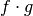 (Note that this product is different from the dot product between two vectors
by 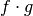 (Note that this product is different from the dot product between two vectors  ). The algebraic immunity (AI) of f is defined as the lowest degree of the function g for which
). The algebraic immunity (AI) of f is defined as the lowest degree of the function g for which  or . The function g for which is called an annihilator of f. Denote the set of all annihilators of f by . This set is an ideal in the ring of Boolean functions generated by 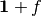.
or . The function g for which is called an annihilator of f. Denote the set of all annihilators of f by . This set is an ideal in the ring of Boolean functions generated by 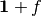.
A function f should not be used if f or 1 + f has a low degree annihilator. If this happens, algebraic attacks [courtois2002cryptanalysis] can be executed.
The component algebraic immunity of any , denoted by  , is the minimal algebraic immunity of the component functions 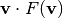 of the Vector Boolean function with 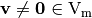.
, is the minimal algebraic immunity of the component functions 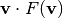 of the Vector Boolean function with 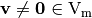.
The algebraic attack exploits the existence of multivariate equations involving the input to the S-box and its output, that is, finding S-boxes with low algebraic immunity.
5.6.2. Library¶
The method used to obtain this criterion is the following:
void AI(int& ai, VBF& F)
The method used to the maximum algebraic immunity that can be achieved by a Vector Boolean function with the same number of input bits and output bits is the following:
int aimax(VBF& F)
5.6.2.1. Example¶
The following program provides the algebraic immunity of a Vector Boolean function given its Truth Table.
#include <iostream>
#include <fstream>
#include "VBF.h"
int main(int argc, char *argv[])
{
using namespace VBFNS;
VBF F;
NTL::mat_GF2 T;
ifstream input(argv[1]);
if(!input) {
cerr << "Error opening " << argv[1] << endl;
return 0;
}
input >> T;
F.puttt(T);
input.close();
cout << "The algebraic immunity of the function is "
<< AI(F) << endl;
cout << "The maximum algebraic immunity that can be achieved by
a Vector Boolean function with the same dimensions is "
<< aimax(F) << endl;
return 0;
}
If we use the NibbleSub S-box Truth Table as input, the output would be the following:
The algebraic immunity of the function is 2
The maximum algebraic immunity that can be achieved by a
Vector Boolean function with the same dimensions is 2
5.7. Global avalanche criterion¶
5.7.1. Description¶
The Global avalanche criterion (GAC) was introduced in [zhang95gac] to measure the overall avalanche characteristics of a Boolean function. Let , its Global avalanche criterion is defined by two indicators:
- The absolute indicator of F, denoted by 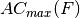, defines the maximum absolute non-zero value of the Autocorrelation Spectrum:
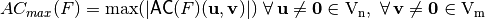
- The sum-of-square indicator, denoted by
 , is the second moment of the autocorrelation coefficients:
, is the second moment of the autocorrelation coefficients:
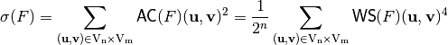
In order to achieve good diffusion, cryptographic functions should achieve low values of both indicators.
5.7.2. Library¶
The methods used to obtain these criteria are the following:
void maxAC(NTL::ZZ& x, VBF& F)
void sigma(NTL::ZZ& x, VBF& F)
5.7.2.1. Example¶
The following program provides the absolute indicator and the sum-of-square indicator of a Vector Boolean function given its Truth Table.
#include <iostream>
#include <fstream>
#include "VBF.h"
int main(int argc, char *argv[])
{
using namespace VBFNS;
VBF F;
NTL::mat_GF2 T;
ifstream input(argv[1]);
if(!input) {
cerr << "Error opening " << argv[1] << endl;
return 0;
}
input >> T;
F.puttt(T);
input.close();
cout << "The absolute indicator of the function is "
<< maxAC(F) << endl;
cout << "The sum-of-square indicator of the function is "
<< sigma(F) << endl;
cout << "The maximum absolute indicator that can be achieved by
a Vector Boolean function with the same dimensions is "
<< maxACmax(F) << endl;
cout << "The maximum sum-of-square indicator that can be achieved by
a Vector Boolean function with the same dimensions is "
<< sigmamax(F) << endl;
cout << "The minimum sum-of-square indicator that can be achieved by
a Vector Boolean function with the same dimensions is "
<< sigmamin(F) << endl;
return 0;
}
If we use the NibbleSub S-box Truth Table as input, the output would be the following:
The absolute indicator of the function is 16
The sum-of-square indicator of the function is 1408
The maximum absolute indicator that can be achieved by a
Vector Boolean function with the same dimensions is 16
The maximum sum-of-square indicator that can be achieved by a
Vector Boolean function with the same dimensions is 4096
The minimum sum-of-square indicator that can be achieved by a
Vector Boolean function with the same dimensions is 256
The following figure represents the Autocorrelation Spectrum of NibbleSub and emphasizes in red the values in which the maximum is attained.

The following figure represents the Autocorrelation Spectrum of NibbleSub and emphasizes in blue the columns (component functions) in which the maximum sum-of-square is attained.

5.8. Linearity distance¶
5.8.1. Description¶
Functions with non-zero linear structures are considered weak functions from cryptanalytic viewpoint. It is our interest to identify strong Vector Boolean functions which are far from this weak functions. The cryptanalytic value of linear structures lies in their potential to map a nonlinear function to a degenerate function via a linear transformation, which may reduce the size of the keyspace.
S-boxes used in block ciphers should have no nonzero linear structures (see [Evertse:88]). The existence of nonzero linear structures, for the functions implemented in stream ciphers, is a potential risk that should also be avoided, despite the fact that such existence could not be used in attacks, so far.
The linearity distance of a Boolean function is a characteristic defined by the distance to the set of all Boolean functions admitting nonzero linear structures. These include, among others, all the affine functions and all non bent quadratic functions and are defined as follows [MeierS:89]:

where:

Linearity distance of a Vector Boolean function, defined as the minimum among the linearity distances of all component functions of F, may be computed from the Autocorrelation Spectrum using [CarletBF:08]:

The differential cryptanalysis is based on the idea of finding high probable differentials pairs between the inputs and outputs of S-boxes present in the cipher, that is, finding S-boxes with low linearity distance. Differential cryptanalysis [BihamS:90] can be seen as an extension of the ideas of attacks based on the presence of linear structures [Nyberg:91]. If  is a linear structure of f, then the inputs of difference result in output differences of 1 or -1 with probability 1. In differential cryptanalysis,
it is only required that inputs of difference
is a linear structure of f, then the inputs of difference result in output differences of 1 or -1 with probability 1. In differential cryptanalysis,
it is only required that inputs of difference  lead to a known difference
lead to a known difference  with high probability, or with a probability that noticeably exceeds the mean. The perfect nonlinear functions are resistant to differential cryptanalysis.
with high probability, or with a probability that noticeably exceeds the mean. The perfect nonlinear functions are resistant to differential cryptanalysis.
Let , if  , it means that f has a nontrivial linear structure. As
, it means that f has a nontrivial linear structure. As  , then
, then  .
.
5.8.2. Library¶
The method used to obtain the linearity distance of a Vector Boolean function is the following:
void ld(NTL::RR& x, VBF& F)
The method used to the maximum linearity distance that can be achieved by a Vector Boolean function with the same number of input bits and output bits is the following:
NTL::RR ldmax(VBF& F)
5.8.2.1. Example¶
The following program provides the linearity distance of a Vector Boolean function given its Truth Table together with the maximum linearity distance that can be achieved by a Vector Boolean function with the same number of input bits and output bits.
#include <iostream>
#include <fstream>
#include "VBF.h"
int main(int argc, char *argv[])
{
using namespace VBFNS;
VBF F;
NTL::mat_GF2 T;
ifstream input(argv[1]);
if(!input) {
cerr << "Error opening " << argv[1] << endl;
return 0;
}
input >> T;
F.puttt(T);
input.close();
cout << "Linearity distance of the function is " << ld(F) << endl;
cout << "The maximum linearity distance: " << ldmax(F) << endl;
return 0;
}
If we use the NibbleSub S-box Truth Table as input, the output would be the following:
Linearity distance of the function is 0
This S-box has linear structures, and as a consequence, the distance to the set of all Boolean functions admitting nonzero linear structures is 0.
5.9. Propagation criterion¶
5.9.1. Description¶
This criterion is based on the properties of the derivatives of Boolean functions and describes the behavior of a function whenever some input bits are complemented. This concept was introduced by Preneel et al. in [PreneelLLGV90] and it is a generalization of the Strict Avalanche Criterion (SAC) defined by Webster and Tavares in [c85-Webster-Tavares].
is said to satisfy the propagation characteristics with respect to  if and only if is balanced.
if and only if is balanced.
A function satisfies the propagation criterion of degree l ( ) if and only if complementing any l or fewer of the input bits complements exactly half of the function values.
) if and only if complementing any l or fewer of the input bits complements exactly half of the function values.
Let and 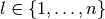, f satisfies the propagation criterion of degree l if and only if .
Let 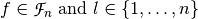, f satisfies the propagation criterion of degree l if its Autocorrelation Matrix elements, at values of the nonzero vector indexes whose weight at most l, is zero: 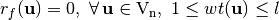
satisfies the propagation criterion of degree 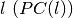 if any component function of F satisfies the . This criterion can be obtained from the Autocorrelation Spectrum in the following way: 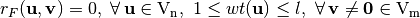
5.9.2. Library¶
The method used to obtain this criterion is the following:
void PC(int& k, VBF& F)
5.9.2.1. Example¶
The following program provides the degree of propagation criterion of a Vector Boolean function given its Truth Table.
#include <iostream>
#include <fstream>
#include "VBF.h"
int main(int argc, char *argv[])
{
using namespace VBFNS;
VBF F;
vec_pol p;
int t;
ifstream input(argv[1]);
if(!input) {
cerr << "Error opening " << argv[1] << endl;
return 0;
}
input >> p;
F.putpol(p);
input.close();
cout << "The function is PC of degree " << PC(F) << endl;
return 0;
}
If we use the function  polynomial in ANF as input, the output would be the following:
polynomial in ANF as input, the output would be the following:
The function is PC of degree 4
The following figure represents the Autocorrelation Spectrum of f and emphasizes in red the rows whose indexes are of weight 1,2,3 and 4.

For all this rows, the Autocorrelation values are 0. As a consequence f satisfies 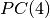.
5.10. Summary¶
Cryptographic criteria Table lists the member functions related to these criteria.
| Cryptographic criteria | |
|---|---|
| SYNTAX | DESCRIPTION |
void deg(int& d, VBF& F) |
 |
void nl(NTL::RR& x, VBF& F) |
 |
void nlr(long& x, VBF& F, int r) |
 |
void Bal(int& bal, VBF& F) |
If F is balanced returns 1, otherwise 0 |
void CI(int& t, VBF& F) |
F is an  |
void AI(int& i, VBF& F) |
 |
void maxAC(NTL::ZZ& x, VBF& F) |
F has absolute indicator x |
void sigma(NTL::ZZ& x, VBF& F) |
F has sum-of-squares indicator x |
void ld(NTL::RR& x, VBF& F) |
 |
void PC(int& l, VBF& F) |
F satisfies the |
Member functions Table lists the member functions related to bounds and other properties of above criteria.
| Member functions of the cryptographic criteria | |
|---|---|
| SYNTAX | DESCRIPTION |
void SpectralRadius(NTL::ZZ& x, VBF& F) |
Spectral Radius |
NTL::RR nlmax(VBF& F) |
Maximum possible nonlinearity |
void typenl(int& typenl, VBF& F) |
1=Bent, 2=Almost Bent, 3=Linear |
int aimax(VBF& F) |
Maximum possible algebraic immunity |
NTL::ZZ maxACmax(VBF& F) |
Maximum possible absolute indicator |
NTL::ZZ maxsigma(VBF& F) |
Maximum possible sum-of-square indicator |
NTL::ZZ minsigma(VBF& F) |
Minimum possible sum-of-square indicator |
NTL::RR ldmax(VBF& F) |
Maximum possible linearity distance |